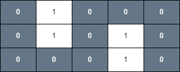
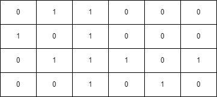
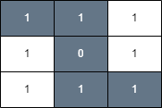

| Category | Difficulty | Likes | Dislikes |
|---|---|---|---|
| Algorithms | Medium | 218 | 13 |
array | breadth-first-search | graph | heap-priority-queue | matrix | shortest-path
google | bloomberg
You are given an m x n binary matrix grid and an integer health.
You start on the upper-left corner (0, 0) and would like to get to the lower-right corner (m - 1, n - 1).
You can move up, down, left, or right from one cell to another adjacent cell as long as your health remains positive.
Cells (i, j) with grid[i][j] = 1 are considered unsafe and reduce your health by 1.
Return true if you can reach the final cell with a health value of 1 or more, and false otherwise.
Example 1:
Input: grid = [[0,1,0,0,0],[0,1,0,1,0],[0,0,0,1,0]], health = 1
Output: true
Explanation:
The final cell can be reached safely by walking along the gray cells below.

Example 2:
Input: grid = [[0,1,1,0,0,0],[1,0,1,0,0,0],[0,1,1,1,0,1],[0,0,1,0,1,0]], health = 3
Output: false
Explanation:
A minimum of 4 health points is needed to reach the final cell safely.

Example 3:
Input: grid = [[1,1,1],[1,0,1],[1,1,1]], health = 5
Output: true
Explanation:
The final cell can be reached safely by walking along the gray cells below.

Any path that does not go through the cell (1, 1) is unsafe since your health will drop to 0 when reaching the final cell.
Constraints:
m == grid.lengthn == grid[i].length1 <= m, n <= 502 <= m * n1 <= health <= m + ngrid[i][j] is either 0 or 1.